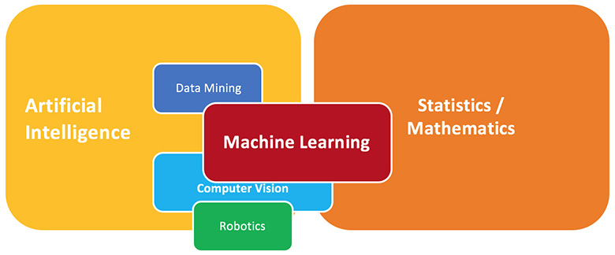
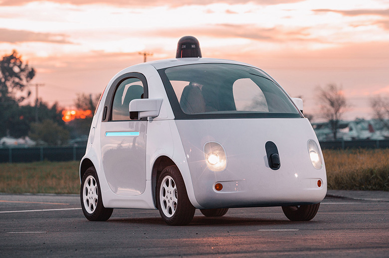
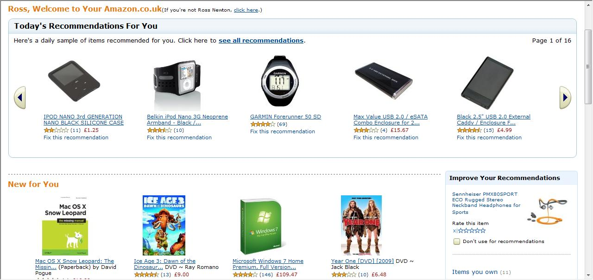
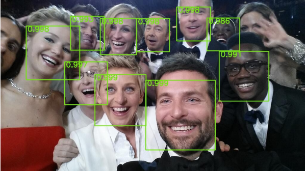
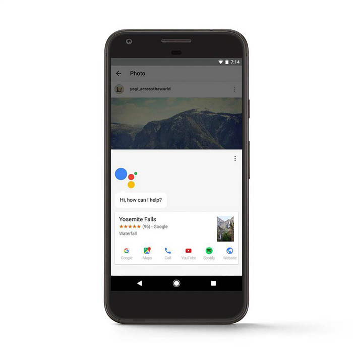

What is Machine Learning?
Machine Learning is the latest buzzword in the Technology industry. It is one of the key technologies that will drive the Next Economy. But, only a small fraction of people really know what it stands for.
One might think that machine learning is something profoundly new, however, the reality is that the technology has been around for years, it is nearly as old as computing.
The tech industry is well acquainted with buzzwords. Each passing year proclaims the advent and popularisation of new catchphrases to which startups attach themselves. Pitch decks and headlines today are losing their mind over “machine learning.” But what does it really mean? Having the fundamental knowledge of what you’re talking about is a good first step, so let’s start with the basics.
Machine Learning in Layman's Terms
Machine Learning is the science that provides computers with the ability to learn and do something without being explicitly programmed.
Essentially, it is a method of teaching computers to make and improve predictions based on some data.
In the past decade, machine learning has given us self-driving cars, practical speech recognition, effective web search, and a vastly improved understanding of the human genome. Machine learning is so pervasive today that you probably use it dozens of times a day without knowing it. Many researchers also think it is the best way to make progress towards human-level AI.
***Here's a classic example of Machine Learning from Quora***:-
1 . Let's say you go to your favourite supermarket one fine day to purchase mangoes. You see mangoes laid out in carts. There are ripe mangoes, over ripe mangoes as well as unripe mangoes. You handpick the mangoes of your choice, weigh them on a weighing scale and pay according to the fixed rate (₹/Kg).
You will most certainly want to pick the sweetest, ideally ripe mangoes. You remember your grandmother saying that bright yellow mangoes are always sweeter than pale yellow ones. So you come up with a simple rule: select the bright yellow mangoes only. You check the colour of the mangoes, pick the bright yellow ones, pay up, and return home. But were you successful in your endeavour of choosing the sweetest mangoes?
Nope, not really.
You come back from the market and taste the mangoes. Some of them are sour, some are perfect and some are over-ripe. Now, you are worried. Apparently, your grandmother’s wisdom is insufficient in determining the selection of mangoes. You find out that there is more to mangoes than just their colour.
After a lot of thinking (and tasting different types of mangoes), you conclude that the bigger, bright yellow mangoes are the sweetest while the smaller, bright yellow mangoes are sweet only half the time.
2 . You are really happy with your findings, and decide to apply this rule the next time you go mango shopping. But the next time when you go to your favourite supermarket, you find that they have already sold all their mangoes and are out of stock. You decide to go to a different supermarket, which sells a different variety of mangoes. Now, you realise that your rule (that big, bright yellow mangoes are the sweetest) is no longer applicable. You have to learn from scratch. You taste different types of mango from this greengrocer and learn that the small, pale yellow ones are in fact the sweetest of them all.
3 . One of your relatives visits you from another city. You want to treat her with mangoes. But she doesn’t care about the sweetness of a mango, she only wants the juiciest ones. You run your experiments again, tasting all kinds of mangoes and realise that the softer mangoes are the juiciest ones.
4 . You move to a different country. Here, mangoes taste surprisingly different from your home. You learn that the reddish-yellow mangoes are in fact tastier than the yellow ones. So, you need to do all your mango research one more time.
5 . Your husband/wife hates mangoes. He/She loves oranges instead. Now, you have to go orange shopping. All your accumulated knowledge about mangoes is useless as oranges have different characteristics than mangoes. You need to learn everything about oranges from scratch. You try to learn about the relation between the physical characteristics and the taste of oranges by trying different kinds of oranges but end up spending a lot of time.
Enter computer programs
Now, imagine that all this while, you were explicitly coding a computer program to help you choose your mangoes (or oranges). You would write rules of the following kind:
if (colour is bright yellow and size is big and sold by the favourite supermarket):
mango is sweet.
if (soft):
mango is juicy.
etc...
You would use these rules to choose the mangoes. You could even send someone with this set of rules to buy the mangoes and would be assured that he would pick the mangoes of your choice only.
But every time you find something new observation, you have to manually modify your set of rules. You have to understand the complex details of all the factors affecting the quality of mangoes. If the problem gets really complicated, it would be really difficult to make accurate rules manually that cover all the possible types of mangoes.
But why waste so much time when you have access to Machine Learning algorithms?
Enter Machine Learning algorithms
Machine Learning algorithms are an evolved form of normal algorithms. They help make your programs “smarter”, by letting them learn from the data you provide.
You take a randomly selected sample of mangoes from the market (Let's call this training data), make a table of the physical characteristics of each mango like shape, size, colour, farming location etc (features), along with the ripeness, juiciness and sweetness of that mango (output variables). You feed this data to the machine learning algorithm, and it learns a model of the relation between a mango’s physical characteristics, and its quality.
Next time you go to the market, you measure the characteristics of the mangoes on sale (Let's call this test data) and feed it to the ML algorithm. It will use the model computed earlier to predict which mangoes are ripe, juicy and sweet. The algorithm may internally use rules similar to the rules you manually wrote earlier, or it may use more complex rules, but you don’t need to worry about that.
Voila, you can now shop for mangoes with great confidence, without worrying about the details of the selection of mangoes. And you can even make your algorithm improve over time, improving its accuracy as it feeds on more and more training data, and modifies its set of rules whenever it makes a wrong prediction.
The best thing about your Machine Learning algorithm is the fact that you can use the same algorithm to train different models, one each for predicting the quality of different kinds of fruits.
And that folks, is Machine Learning.
Learning from data
Data is recorded from some real-world phenomenon. What might we want to do with that data?
1. Prediction - what can we predict about this phenomenon?
2. Description - how can we describe/understand this phenomenon in a new way?
How can we extract knowledge from data to help humans take decisions?
How can we automate decisions from data?
How can we adapt systems dynamically to enable better user experiences?
So, what exactly is machine learning?
✕ Writing code to explicitly do the above tasks.
✓ Writing code to make the machine learn how to do the above tasks.
Where does it fit?

Where is it used?




- Driving a car
- Recognising spam emails
- Recommending books
- Reading Handwriting
- Recognising speech, faces etc
Wanna learn Machine Learning? Stay connected to my blog.
Subscribe to Merutan : Tech Blog for Geeks
Get the latest posts delivered right to your inbox